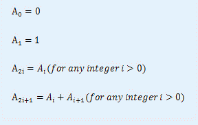
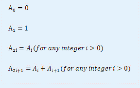

小白和小蓝在一起上数学课，下课后老师留了一道作业，求下面这个数列的通项公式：

小白作为一个数学爱好者，很快就计算出了这个数列的通项公式。于是，小白告诉小蓝自己已经做出来了，但为了防止小蓝抄作业，小白并不想把公式公布出来。于是小白为了向小蓝证明自己的确做出来了此题以达到其炫耀的目的，想出了一个绝妙的方法：即让小蓝说一个正整数N，小白则说出
| F.A.Qs | Home | Discuss | ProblemSet | Status | Ranklist | Contest | 入门OJ | ModifyUser Xeonacid | Logout | 捐赠本站 |
|---|
小白和小蓝在一起上数学课，下课后老师留了一道作业，求下面这个数列的通项公式：

小白作为一个数学爱好者，很快就计算出了这个数列的通项公式。于是，小白告诉小蓝自己已经做出来了，但为了防止小蓝抄作业，小白并不想把公式公布出来。于是小白为了向小蓝证明自己的确做出来了此题以达到其炫耀的目的，想出了一个绝妙的方法：即让小蓝说一个正整数N，小白则说出
输入文件第一行有且只有一个正整数T，表示测试数据的组数。
第2～T+1行，每行一个非负整数N。
输出文件共包含T行。
第i行应包含一个不含多余前缀0的数，它的值应等于An(n为输入数据中第i+1行被读入的整数)
【样例输入】
T<=20,N<=10^100